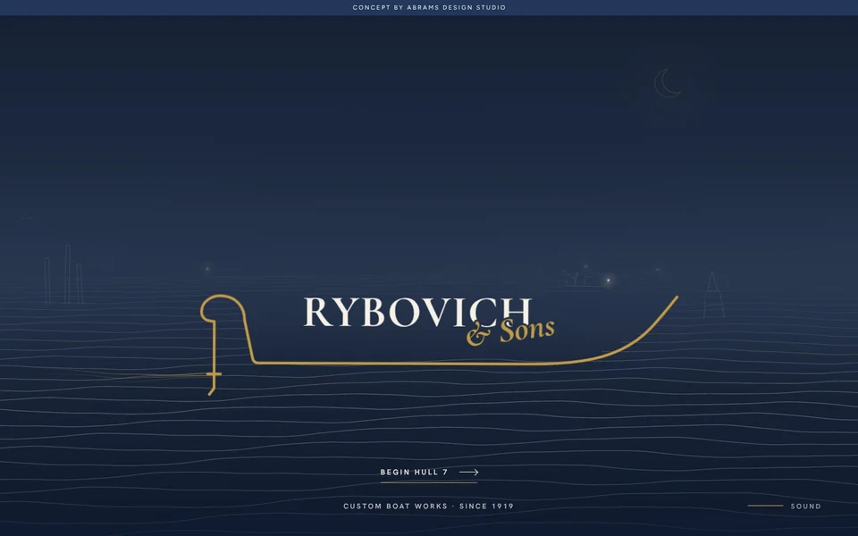
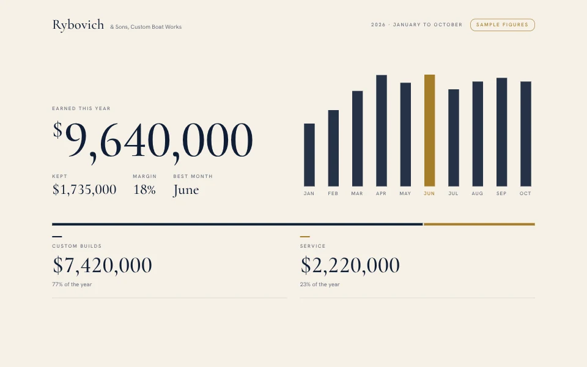

Every hull begins as a single line.
Drawn by hand
Six custom boats, drawn and built by the Rybovich family. Hull 7 is yours.
The board
Sportfishermen designed, lofted and built by hand in Palm Beach Gardens.
Refit, repair and care from the yard that knows how she was built.
Hull No. 7
Tell us how you fish and where. We'll take it from the first line on the board to sea trials.
2175 Idlewild Road, Palm Beach Gardens, Florida 33410
561-627-9168

Your look, made clean.
Your yard, in full.

Your whole yard, connected.